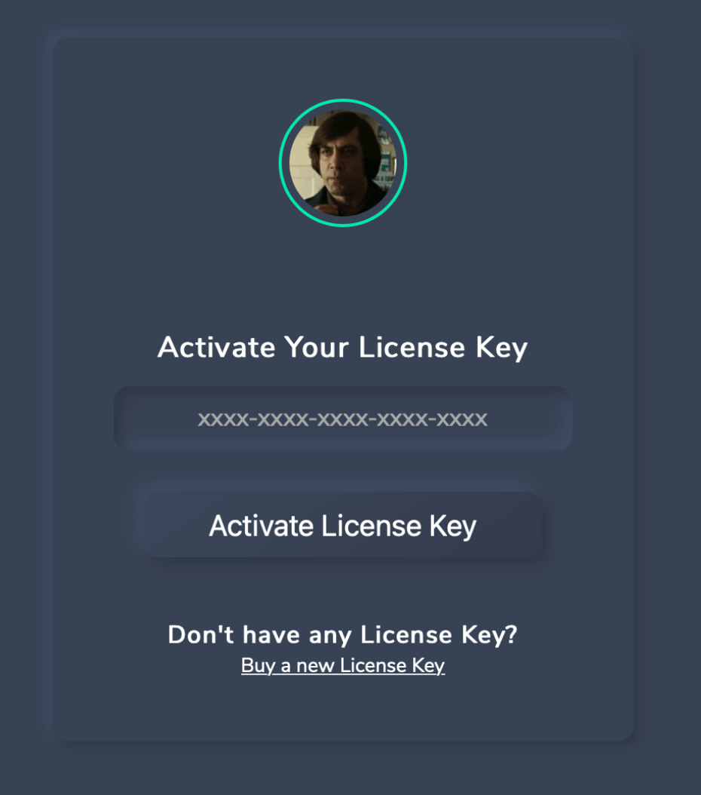
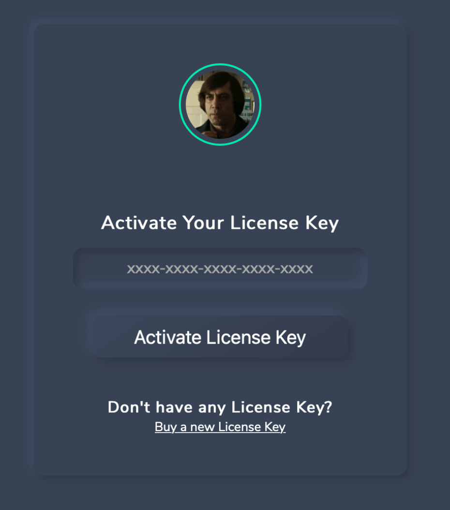

Projects
SharkIO
Date: 02/2021Source Code: GitHub
Technologies Involved: HTML, CSS, Javascript, Node.js, MongoDB.
Project Description: SharkIO is a Web Application which allows users to subscribe and manage their subscription to a generic digital service (in this case a google chrome extension).
To access the service users have to login with their Discord Account. Once logged in, they can subscribe to the service by paying with their credit card. The payment
flow has been implemented by using Stripe's technologies. In this case, the subscription is composed by an initial setup fee, plus a recurrent monthly payment. Once that
users are subscribed to the service, they can access their personal dashboard, through which thay can retrive all the information related to their subscription, or perform
some actions such as:
- Manage their subscription.
- Join the Official Discord's Server of the Service.
- Unbind their license from their current Discord Account.
- Reset the IP address on which the software is binded.
 



Pluto
Date: 04/2021Source Code: GitHub
Technologies Involved: Arduino uno, Raspberry Pi, C++, Python, Node.js, Javascript, HTML, CSS.
Project Description:
Pluto is a robot built to engage people to visit the virtual exposition of the space exhibition at
the Museo Nazionale Scienza e Tecnologia Leonardo da Vinci during the Covid pandemic.
The objective was to create one single robot, easy to use, that could be deployed by anyone who
reads the simple manual and that accomplish two different missions:
- First scenario is during covid, so the idea was to attract people at train stations, or semi-public areas with the objective of getting peoples attention and inviting them to visit the virtual exposition.
- The second one was to be placed inside the museum after it opens, being part of the exhibition itself.
CryptoSimulator
Date: 01/2021Source Code: GitHub
Technologies Involved: React Native, Tensorflow, Expo, Firebase, Javascript, Node.js, Python, Google Cloud Platform.
Project Description: CryptoSimulator is a cross-platform mobile application for monitoring and
forecasting the trend of cryptocurrencies over time. It allows users to be
always up to date on the value of the most important cryptocurrencies by
exploiting interactive graphs and plots. By the implementation of AI algorithms
it allows users to monitor and predict cryptocurrency’s trends and simulate
the future of their preferred assets. In other words, thanks to an artificial
intelligence engine, based on a recurrent neural network trained to predict future trends,
CryptoSimulator helps users to make decisions about when to sell or buy the desired assets
in order to maximize profits and reduce losses. The application expands its functionalities
by allowing users to authenticate and to create and manage their personal wallet with the
cryptocurrencies owned. In particular, users can always be up to date on the current
value of their wallet and understand how it could evolve over time thanks to the
predictions made by the AI.


Mask Recognition
Date: 11/2020Source Code: GitHub
Technologies Involved: Python, Tensorflow.
Project Description:
The project is dedicated to solve an image classification problem on a proposed dataset.
In particular, the purpose is to classify images depicting groups of people based on the number of masked people.
In the specific, the solution must discriminate between images depending on the following cases:
- All the people in the image are wearing a mask.
- No person in the image is wearing a mask.
- Someone in the image is not wearing a mask.